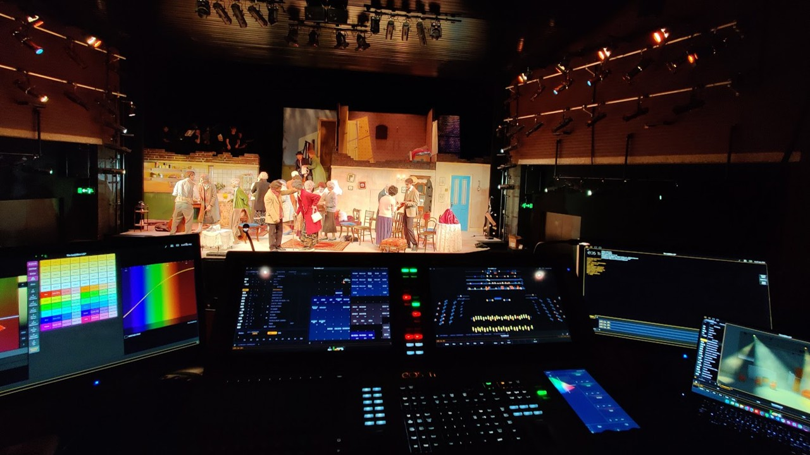
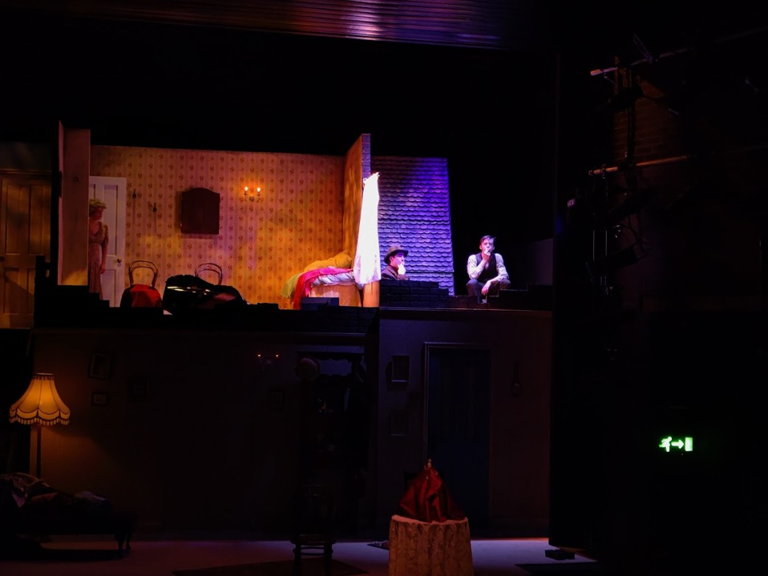
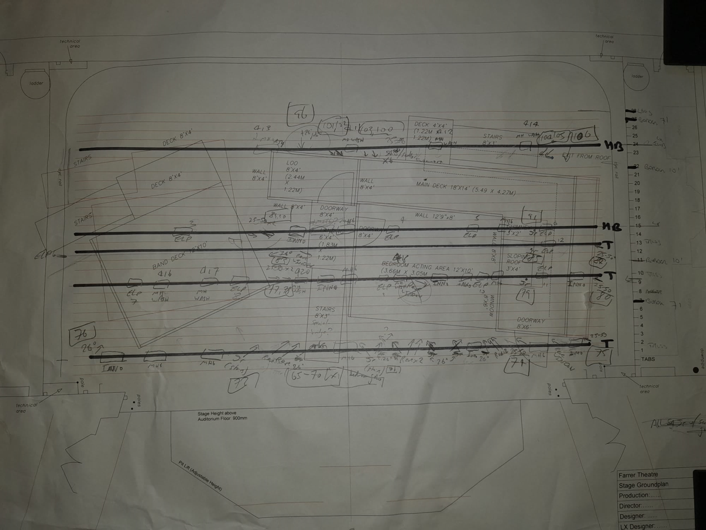

"The Ladykillers" (Feb 2023) | design | rigging | programming
The Ladykillers was my first time designing in our largest venue, the Farrer Theatre. The two-level set proved a technical challenge as it meant I was limited in what I could do with FOH. I also had to hang conventional fixtures carefully as the set limited tallescope use during focus. The director of the show asked me to create a cinema-style visual language, guiding the audience's focus through the fast-moving comedy, and striking a balance between brightness and intimacy.


